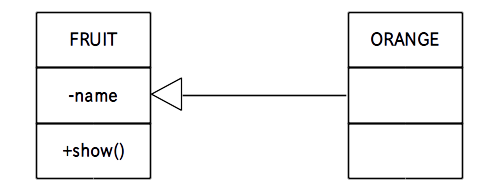

前のページではクラスがひとつだけの単一クラス図を描きましたが、クラスが 2 つ以上ある場合はあるクラスと他のクラスの関係も図に表す必要があります。
クラス間の関係は大きく分けると
の２つがあるのですが、ここではまず「汎化」について学びます。
さて「汎化」とは具体的にはインヘリタンス(継承)の関係を表します。
例えば前ページの FRUIT スーパークラスを継承して次の ORANGE サブクラスを作ったとします。
public class ORANGE extends FRUIT{
public ORANGE( int no ) // コンストラクタ
{
set_name( "みかん No." + no );
}
}
この関係を英語で書くと
ORANGE is a FRUIT : みかんはフルーツです
となりますので(微妙に a の使い方が変な気もしますが)、「汎化」は別名「is-a 関係」と言います。
さてこの「汎化」をクラス図で表す場合は中抜き三角の矢印線でクラスとクラスをつないで表します。
この矢印はスーパークラスの方に向けて付けます。
例えば上の FRUIT スーパークラスと ORANGE サブクラスを含むクラス図は次のようになります。
なお ORANGE のコンストラクタは省略しています。
